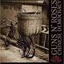
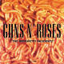
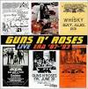
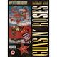
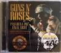
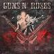
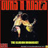
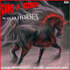
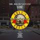
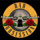
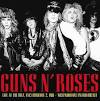
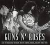
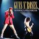
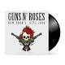
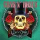

O grupo foi formado no início de 1985 pelos membros do Hollywood Rose Axl Rose (vocais) e Stradlin (guitarra rítmica); e membros do L.A. Tracii Guns (guitarra solo), Ole Beich (baixo) e Robbie Gardner (bateria). A nova banda criou o seu nome a partir da combinação de dois dos nomes dos membros do grupo. Depois de pouco tempo (várias fontes indicam que apenas dois ou três shows foram feitos com os integrantes Guns, Beich & Gardner), o baixista Ole Beich foi substituído por Duff McKagan, enquanto a falta de Tracii Guns nos ensaios levou à sua substituição por Slash.